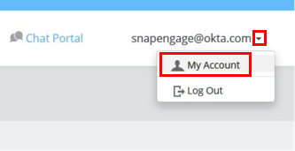
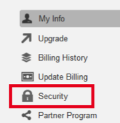
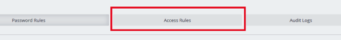
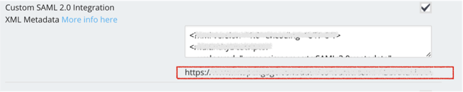
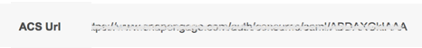

Navigate to SnapEngage and sign in as a administrator.
Select the arrow to the right of your email address. In the menu that opens, select My Account. Then, select Security > Access Rules, as shown below.



Copy and paste the following XML Metadata as shown below.
Sign into the Okta Admin dashboard to generate this value.
Copy the ACS Url that displays below the metadata, as shown above.
In Okta, go to the General tab for the SnapEngage application and enter the ACS Url.you just copied, as shown below.

Done!
Note: IdP-initiated flows are supported. SP-initiated flows and Just In Time (JITO provisioning are not supported.